Core Objectives
- Analyze the historical origins and strategic establishment of judicial review in Marbury v. Madison.
- Differentiate between the jurisdiction and functions of the dual court system, including the specific roles of district and appellate courts.
- Evaluate the competing judicial philosophies of activism and restraint in the context of constitutional interpretation.
- Assess the structural mechanisms that preserve judicial independence and the checks available to the legislative and executive branches.
Key Terms
Introduction
In the intricate architecture of the American government, the judiciary occupies a position that is both paradoxical and essential. Writing in The Federalist Papers (No. 78), Alexander Hamilton famously described the judiciary as the "least dangerous" branch of the proposed government. He reasoned that unlike the President, the courts commanded no armies and controlled no weapons; they held no "sword." Unlike the Congress, the courts controlled no treasury and levied no taxes; they held no "purse." The judiciary, Hamilton argued, possessed neither force nor will, but merely judgment. Yet, despite these structural limitations, the Supreme Court has evolved into the final arbiter of the Constitution, possessing the immense power to strike down laws passed by Congress, invalidate actions taken by the President, and reorder the fundamental rights of American society. This transformation from a "least dangerous" branch to a co-equal partner in governance is one of the most significant developments in the history of the republic.

The structural design of the federal government purposefully deprives the judiciary of both financial and military power. By possessing neither the "purse" nor the "sword," the courts must rely entirely on the perceived legitimacy of their legal judgments to influence national policy.
The essential function of the judiciary is to serve as the specific interpreter of the law. In a dictatorship or an absolute monarchy, the law is simply the will of the ruler, changeable at a moment's notice to suit the needs of power. In a constitutional democracy, however, the law is a public contract—a set of binding rules that restricts both the government and the people. When disagreements arise regarding this contract—whether between two citizens, between a citizen and the government, or between different branches of government—there must be a neutral referee to resolve the conflict. Without such a referee, the system would devolve into a contest of raw power, where the strong simply dominate the weak. The Founders established the judiciary to serve as this stabilizing force, ensuring that the passions of the majority do not trample the fundamental rights of the minority or violate the terms of the constitutional contract.
This role requires the courts to navigate a permanent, structural tension between democratic will and constitutional boundaries. The legislative and executive branches are designed to be responsive to voters; they are political by nature, driven by elections, public opinion, polls, and the immediate demands of their constituents. The judiciary, conversely, is designed to be insulated from these pressures. Federal judges are appointed rather than elected, and they serve for life. This insulation allows them to make decisions that are legally correct but politically toxic. Whether ruling that a popular law violates free speech, or that a specific executive action exceeds presidential authority, the courts act as a brake on the immediate desires of the majority in favor of long-term constitutional principles. They are the guardians of the rules of the game, even when the spectators—and the players—are shouting for a different outcome.
However, the authority of the court is not automatic, nor is it unlimited. Because the Court lacks the power of enforcement—it cannot send the police to arrest a defiant governor, nor can it cut the funding of a defiant agency—it relies entirely on legitimacy. Legitimacy is the public’s belief that the court’s decisions are grounded in law rather than politics. If the public begins to view the Supreme Court as merely a "super-legislature" of unelected politicians in robes, the court’s power evaporates. Throughout American history, the judiciary has had to carefully balance its duty to interpret the Constitution with the need to maintain its standing in the eyes of the nation. From the early struggles of the Marshall Court to define its own power, to the modern battles over social issues, the story of the judiciary is the story of the struggle to maintain the rule of law in a dynamic, divided, and often turbulent democracy.
Checkpoint
1. Why did Alexander Hamilton consider the judiciary the "least dangerous" branch of government?
The Power of Judicial Review: Defining Authority
The United States Constitution is remarkably brief regarding the judicial branch. While Article I outlines the powers of Congress in exhaustive detail, and Article II clearly defines the role of the President as Commander-in-Chief, Article III is comparatively vague. It creates "one supreme Court" and gives Congress the authority to create lower courts, but it says very little about what the Court actually does. Crucially, the text of the Constitution does not explicitly grant the Supreme Court the power to strike down laws passed by Congress. This silence created a massive constitutional void in the early years of the republic. If Congress passed a law that violated the Constitution, and the President signed it, was that law valid? If the answer was yes, then the Constitution was not the supreme law of the land; it was merely a suggestion. If the answer was no, who had the specific authority to declare the law void?
The answer to this question was not written in the Philadelphia Convention of 1787. Instead, it was forged in the bitter political fires of the election of 1800. The power of Judicial Review—the authority of the federal courts to declare laws or executive actions unconstitutional—was not a gift from the Founders, but a strategic victory seized by the Court itself under the leadership of Chief Justice John Marshall. To understand this power, one must understand the political crisis that birthed it.
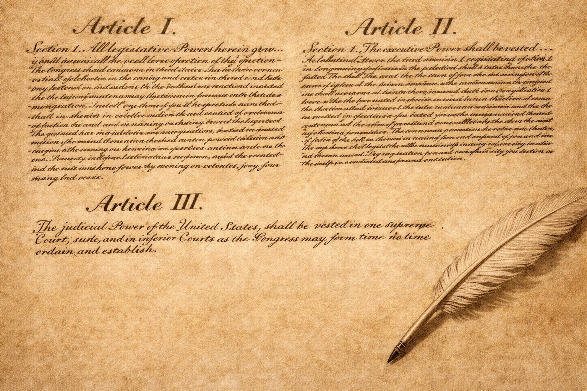
The text of Article III of the Constitution is remarkably brief compared to the detailed powers granted to the legislative and executive branches. This brevity created a constitutional ambiguity regarding who possessed the final authority to interpret the legality of federal laws.
The Revolution of 1800 and the Midnight Appointments
The election of 1800 was one of the most contentious in American history. It pitted the incumbent President, John Adams, and his Federalist Party against Thomas Jefferson and the Democratic-Republicans. The two sides viewed each other not just as political opponents, but as existential threats to the nation. The Federalists believed Jefferson was a dangerous radical who would bring the chaos of the French Revolution to American shores. When the votes were counted, Adams lost. For the first time in modern history, power was to be transferred peacefully from one political faction to another.

The peaceful transfer of power in 1800 was complicated by a lame-duck administration attempting to pack the judicial branch with partisan loyalists. This last-minute strategy aimed to preserve political influence within the unelected courts after losing control of the elected branches.
However, the transition was anything but smooth. In the "lame duck" period between the election in November and Jefferson’s inauguration in March, the Federalist Congress passed the Judiciary Act of 1801. This law created dozens of new federal judgeships and justice of the peace positions. Adams, determined to preserve Federalist influence in the only branch of government left open to them, rushed to fill these seats with loyal party members. These appointees became known as the "Midnight Judges" because Adams was said to be signing their commissions late into the night of his final day in office.
The Senate confirmed the appointments, and Adams signed the commissions. The final step was for the Secretary of State to affix the Great Seal of the United States and physically deliver the papers to the new judges. In the chaotic final hours of the administration, the Secretary of State—John Marshall, who had just been appointed Chief Justice of the Supreme Court but was serving out his term in the cabinet—failed to deliver all of them. When Thomas Jefferson took the oath of office the next day, he found several undelivered commissions sitting on a desk in the State Department. Jefferson, furious at Adams’s attempt to "pack" the courts, ordered his new Secretary of State, James Madison, not to deliver them. One of those undelivered commissions belonged to William Marbury, a Maryland businessman who had been appointed as a Justice of the Peace for the District of Columbia. Marbury, wanting the job he had been promised, sued.
Checkpoint
1. What caused William Marbury to file a lawsuit directly with the Supreme Court?
The Marshall Dilemma
Marbury took his case directly to the Supreme Court. He asked the Court to issue a writ of mandamus—a legal order commanding a government official to perform a mandatory duty. In this case, Marbury wanted the Court to order James Madison to hand over the commission. This lawsuit, Marbury v. Madison (1803), placed Chief Justice John Marshall in a catastrophic political dilemma.
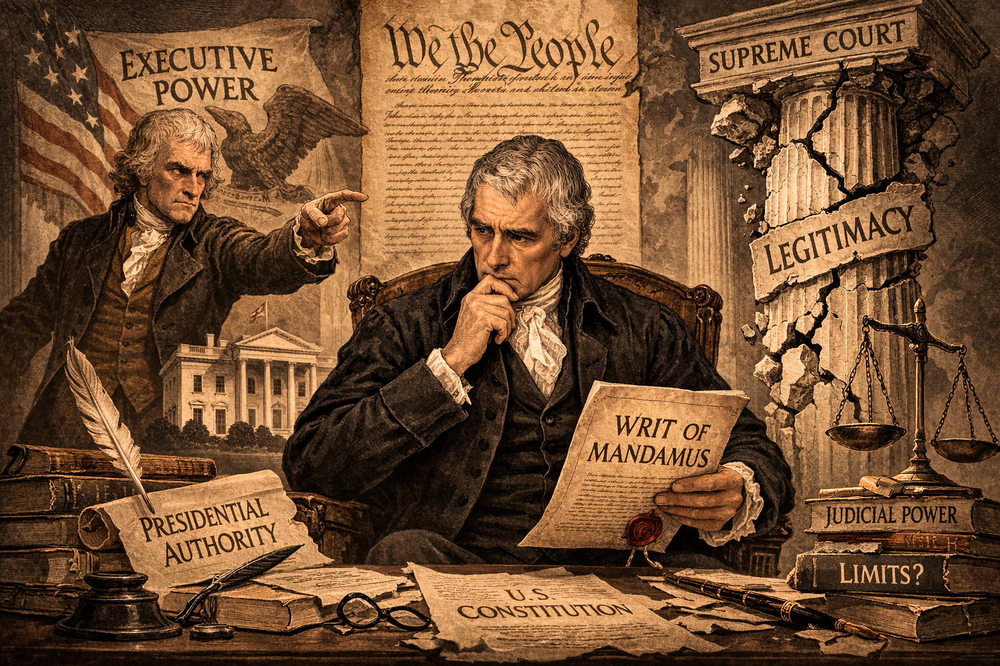
Political conflicts often force the judiciary into situations where any legal ruling risks damaging the institution's authority. Navigating a dispute between a defiant executive branch and a wronged citizen requires strategic legal maneuvering to avoid exposing the court's lack of enforcement power.
Marshall knew that the new Jefferson administration was hostile to the Court. If Marshall ruled in favor of Marbury and ordered Madison to deliver the commission, Jefferson would almost certainly tell Madison to ignore the order. The Supreme Court had no army to enforce its ruling. If the President simply ignored the Chief Justice, the Court would be revealed as powerless and irrelevant, destroying its authority for generations. However, if Marshall ruled against Marbury, he would appear to be caving to political pressure, afraid to stand up to the President. This would also make the Court look weak and subservient.
Marshall was trapped between a rock and a hard place. A ruling for Marbury would provoke a constitutional crisis the Court would lose; a ruling against Marbury would surrender the independence of the judiciary. Marshall needed a third option, a way to escape the trap while asserting the power of his branch.
Checkpoint
1. What consequence would likely result if Chief Justice Marshall ordered the commission delivered and the President ignored it?
The Grand Strategic Ruling
Marshall’s opinion in Marbury v. Madison is considered the single most important decision in American constitutional law because of how he navigated this trap. Marshall broke the decision into three parts. First, he asked: Did Marbury have a right to the commission? Marshall answered yes. Once the President signed it and the Seal was affixed, the appointment was complete. Second, he asked: Did the laws of the country afford Marbury a remedy? Again, Marshall answered yes. To have a right without a remedy is a logical absurdity in law.
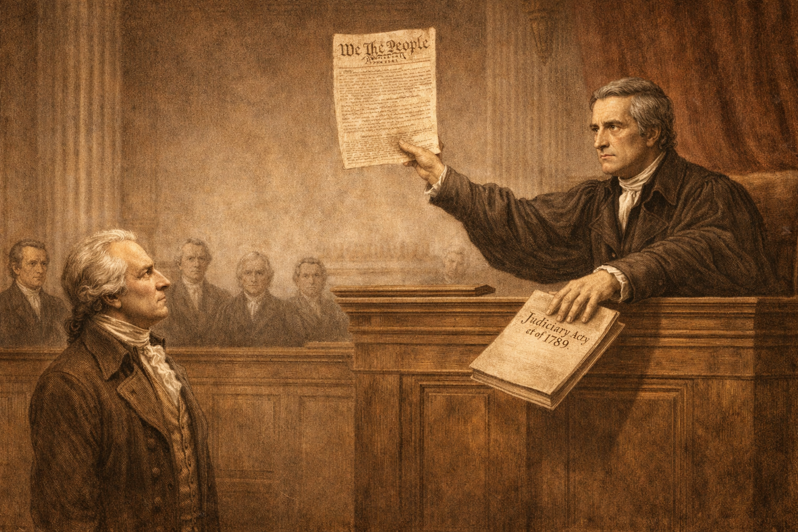
Judicial review is established not by direct confrontation, but by strategically limiting the court's own jurisdiction. By declaring a legislative act unconstitutional because it improperly expands judicial power, a court can assert its supremacy over constitutional interpretation while avoiding a direct political standoff.
It was the third question where Marshall executed his legal maneuver. He asked: Was the Supreme Court the proper place for Marbury to seek this remedy? Marbury had come to the Supreme Court because a section of the Judiciary Act of 1789 explicitly gave the Court the power to issue writs of mandamus in cases like this. Marshall, however, looked at Article III of the Constitution. Article III defined the "original jurisdiction" of the Supreme Court—the types of cases it could hear first, without an appeal. The Constitution’s list was very short and specific, involving ambassadors and states. It did not mention writs of mandamus or administrative disputes.
Marshall concluded that when Congress passed the Judiciary Act of 1789, it had attempted to expand the Supreme Court’s original jurisdiction beyond what the Constitution allowed. Marshall argued that Congress could not simply change the Constitution by passing a regular law. If the Constitution is the supreme law, then any legislative act that conflicts with it must be void. Therefore, the section of the Judiciary Act that gave Marbury the right to sue in the Supreme Court was unconstitutional. Marshall dismissed the case. Marbury never got his job, and Jefferson technically "won" the battle. But by striking down a federal law, Marshall established the power of Judicial Review. He famously wrote, "It is emphatically the province and duty of the judicial department to say what the law is."
Checkpoint
1. How did Chief Justice Marshall strategically navigate the dilemma of Marbury's commission?
Expanding Authority: The Supremacy Clause
Having established the power to strike down federal laws, the Court soon faced challenges regarding the relationship between the federal government and the states. The principle of judicial review needed to extend beyond Congress to include state legislatures if the "Supremacy Clause" of Article VI was to have any meaning. The test of this power came in the case of McCulloch v. Maryland (1819).

The Supremacy Clause ensures that state governments cannot utilize their legislative powers to undermine or destroy federal operations. Asserting federal supremacy prevents states from effectively vetoing national laws through taxation or local regulation.
The state of Maryland, hostile to the newly created Second Bank of the United States, passed a law imposing a heavy tax on any bank not chartered by the state legislature. The clear intent was to tax the federal bank out of existence. James McCulloch, the cashier of the Baltimore branch of the Bank of the United States, refused to pay the tax. The case reached the Supreme Court, presenting two questions: Could Congress create a bank? And could a state tax a federal entity?
Marshall again wrote the opinion. He first upheld the power of Congress to create the bank under the "Necessary and Proper Clause," engaging in a broad interpretation of implied powers. More importantly for the judiciary, he struck down the Maryland tax law. Marshall declared that "the power to tax involves the power to destroy." He reasoned that if a state could tax a federal agency, it could effectively veto federal laws. This violated the Supremacy Clause, which states that the Constitution and federal laws are supreme over state laws. By striking down the Maryland law, the Court asserted its authority to referee disputes between the national government and the states, firmly establishing the federal judiciary as the ultimate overseer of the entire constitutional system.
Checkpoint
1. How did the ruling in McCulloch v. Maryland shape the balance of federalism?
The Strategic Logic of Constitutional Guardianship
The establishment of judicial review transformed the nature of American politics. It meant that the "will of the majority" had limits. In a pure democracy, 51 percent of the voters can do whatever they wish to the other 49 percent. In a constitutional republic equipped with judicial review, the majority can only act within the boundaries of the higher law. The genius of Marshall’s logic was to tether the Court’s power to the people’s own document. He argued that when the Court strikes down a law, it is not elevating its own will above the Congress; rather, it is elevating the "permanent will" of the people (the Constitution) above the "temporary whims" of their representatives.

In a constitutional republic, the principle of majority rule is restricted by fundamental legal boundaries. The judiciary acts as a mechanism to elevate the enduring principles of the constitutional framework above the immediate, temporary desires of electoral majorities.
This power creates a unique feature of American governance: the legalization of political conflict. Major debates over slavery, economic regulation, civil rights, and personal privacy eventually find their way to the Supreme Court. While this puts immense pressure on the nine justices, it also serves as a stabilizing mechanism. It forces political combatants to frame their arguments in terms of rights, precedents, and text, rather than merely force and numbers. Judicial review ensures that the Constitution remains a living, enforceable reality rather than a dusty historical artifact. It creates a government where, in theory, the law is king, rather than the king being the law.
Checkpoint
1. How does the mechanism of judicial review alter the dynamic of majority rule in the United States?
The Federal Court System: Hierarchy and Jurisdiction
The American judiciary is not a monolith; it is a complex, multi-layered system designed to reflect the federal structure of the nation. At its core, the United States operates under a Dual Court System. This means there are two distinct, parallel judicial systems in operation at all times: the federal court system and the court systems of the fifty individual states. While they often interact, they serve different purposes and derive their power from different sources. The state courts, created by state constitutions and laws, handle the vast majority of legal disputes—over 90 percent—ranging from traffic violations and divorce proceedings to most criminal cases and contract disputes. The federal courts, established by Article III of the Constitution and acts of Congress, are reserved for cases involving national laws, interstate conflicts, and constitutional questions.

The American legal framework operates as a dual system, dividing authority between massive state-level legal infrastructures and a specialized, narrower federal hierarchy. This separation ensures that localized disputes are handled locally, while national and constitutional issues are escalated to federal authorities.
The federal system itself is organized as a three-tiered hierarchy. This structure is not accidental; it is designed to filter cases efficiently, ensuring that minor disputes are resolved locally while major questions of national law rise to the top. The hierarchy consists of the U.S. District Courts at the bottom, the U.S. Courts of Appeals in the middle, and the U.S. Supreme Court at the apex. Understanding the function of each tier requires understanding the concept of Jurisdiction—the legal authority of a court to hear and decide a case.
The Foundation: U.S. District Courts
The first level of the federal judiciary is the U.S. District Court. These are the trial courts of the federal system. There are 94 district courts spread across the United States and its territories, with at least one in every state. Larger states like California, Texas, and New York have multiple districts (e.g., the Southern District of New York or the Central District of California) to handle the heavy caseload.

Fact-finding is the foundational step of the legal process. At the trial court level, evidence is evaluated, witnesses are heard, and juries determine the factual reality of a dispute before constitutional or federal law is applied to the verdict.
District courts possess Original Jurisdiction for most federal cases. This means they are the first courts to hear a case. This is the only level of the federal system where trials occur. In a district court, witnesses testify, evidence is presented, and a jury is impaneled to determine the facts of the case. A single judge presides over the proceedings to ensure that the law is followed and the rules of evidence are respected.
The primary function of the district court is fact-finding. Did the defendant rob the bank? Did the company pollute the river in violation of federal law? Did the employer discriminate against the employee based on race? The judge or jury answers these factual questions and applies the relevant law to reach a verdict. Most federal cases end here. The losing party may accept the decision, or they may choose to appeal to the next level.
Checkpoint
1. What distinguishes the function of U.S. District Courts within the federal hierarchy?
The Filter: U.S. Courts of Appeals
Sitting directly above the district courts are the U.S. Courts of Appeals, often referred to as Circuit Courts. The nation is divided geographically into twelve regional circuits, plus a specialized Court of Appeals for the Federal Circuit which handles specific nationwide issues like patents and international trade. For example, the Ninth Circuit covers a vast area of the American West, including California, Oregon, Washington, and Arizona.
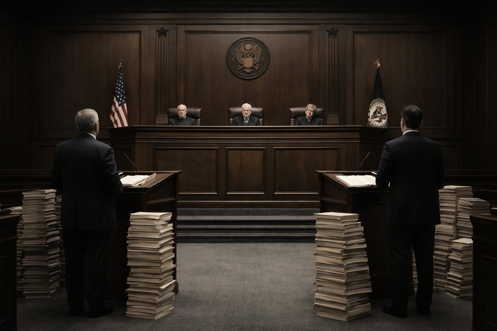
Appellate review serves as a procedural filter, focusing strictly on the misapplication of law rather than the re-evaluation of evidence. By analyzing written records and legal briefs, appellate courts correct procedural errors and establish uniform legal interpretations for their geographic circuits.
These courts possess Appellate Jurisdiction. This means they have the authority to review decisions made by lower courts. Crucially, appellate courts do not hold new trials. There are no witness stands, no juries, and no dramatic introduction of new evidence. Instead, a panel of three judges reviews the written record of the trial court to determine if a legal error occurred. Lawyers for both sides submit legal briefs—written arguments explaining why the lower court was right or wrong—and may present oral arguments before the judges.
The focus of the appellate court is strictly on questions of law, not questions of fact. The court does not ask "Is the defendant guilty?" but rather "Did the district judge allow illegal evidence to be used?" or "Did the judge misinterpret the federal statute?" If the appellate court finds a significant legal error, it can reverse the lower court’s decision or send the case back for a new trial. This level serves as a vital filter, correcting mistakes and ensuring that federal law is applied consistently within each region. A decision by a Circuit Court is binding on all district courts within that circuit.
Checkpoint
1. How does the operational process of a U.S. Court of Appeals differ from that of a District Court?
The Apex: The Supreme Court
At the top of the pyramid stands the United States Supreme Court. It is the final court of appeals and the ultimate authority on the interpretation of the Constitution and federal law. While the Supreme Court has Original Jurisdiction in a very small number of cases—specifically those involving ambassadors, public ministers, or disputes where a state is a party (e.g., New Jersey v. New York)—its primary workload consists of cases heard under its appellate jurisdiction.

The apex of the federal judiciary operates with nearly complete discretionary control over its docket. By utilizing internal voting mechanisms, the highest court selectively targets cases that resolve regional legal inconsistencies or address matters of profound national significance.
The Supreme Court is unique because it has almost total control over its own agenda. Unlike district courts, which must hear cases filed within their jurisdiction, the Supreme Court chooses which cases it wants to decide. This process begins with a petition for a Writ of Certiorari, a formal request asking the Court to order up the records from a lower court for review. The Court receives between 7,000 and 8,000 such petitions every year but accepts fewer than 80 for full argument and decision.
The selection process is governed by an unwritten rule known as the "Rule of Four." At least four of the nine justices must vote to grant certiorari for a case to be heard. The justices do not simply look for cases where they think the lower court was wrong. They look for cases with national significance or cases that resolve a "circuit split." A circuit split occurs when different Courts of Appeals have interpreted the same law in different ways. For instance, if the Fifth Circuit rules that a certain police tactic is constitutional, but the Ninth Circuit rules that the exact same tactic is unconstitutional, the Supreme Court must step in to establish a uniform rule for the entire nation.
Checkpoint
1. How does the Supreme Court's case selection process differ from lower federal courts?
Pathways to Federal Court: Diversity and Federal Questions
Not every legal dispute can enter the federal system. The Constitution limits federal judicial power to specific types of cases. The two most common pathways are Federal Question Cases and Diversity of Citizenship cases.

Federal jurisdiction is strictly limited to cases involving constitutional interpretations, federal statutes, or disputes designed to prevent regional bias. Providing a neutral federal forum for interstate disputes facilitates economic fairness and prevents local courts from unfairly favoring their own residents.
A Federal Question exists when a case involves the U.S. Constitution, a federal law, or a treaty. For example, if a student is suspended from a public school for wearing a political armband, they can sue in federal court arguing that their First Amendment rights were violated. This is a federal question because it turns on the interpretation of the Constitution. However, if a student is suspended for fighting, which violates school policy but usually not the Constitution, that matter stays in state court.
Diversity of Citizenship jurisdiction allows federal courts to hear civil cases where the parties are citizens of different states and the amount in controversy exceeds $75,000. This provision was included by the Founders to prevent bias. If a citizen of New York sues a citizen of Georgia in a Georgia state court, there is a fear that the local judge and jury might favor their own resident. By allowing the case to be moved to federal court, the system provides a neutral forum for resolving interstate disputes, facilitating commerce and fairness across state lines.
Checkpoint
1. Under what condition does a legal dispute qualify as a "Federal Question" case?
The Standardization of Justice
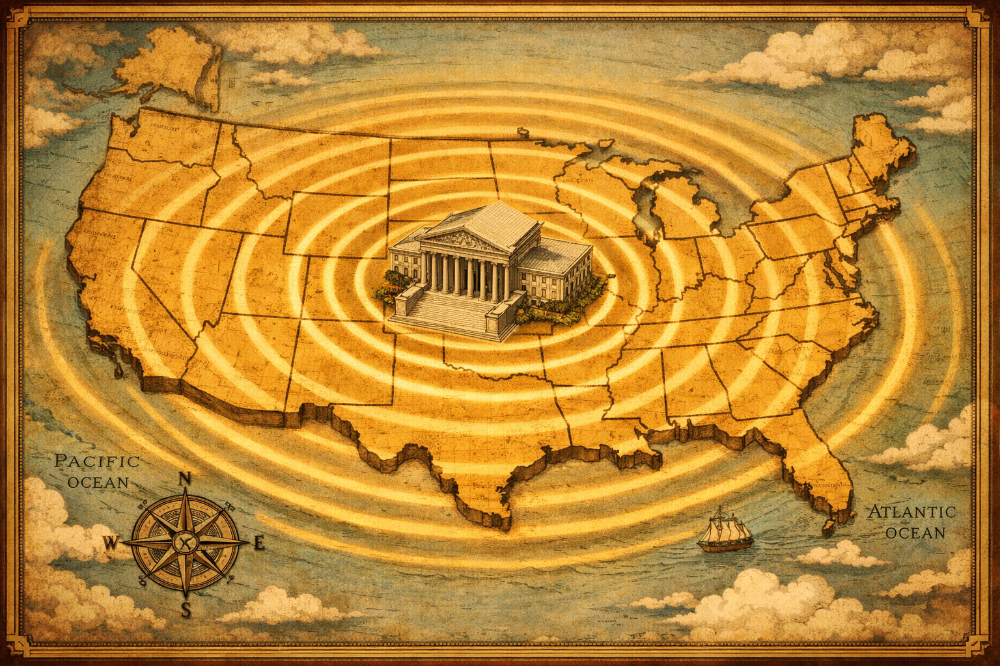
A hierarchical judicial structure ensures the standardization of justice across a massive geographic republic. As final interpretations of law cascade downward from the highest appellate authority, they bind all local and state jurisdictions, preventing the fracturing of constitutional rights based on geography.
The hierarchical structure of the federal judiciary serves a critical function in a large, diverse republic: the standardization of justice. Without a Supreme Court with appellate authority over the state and lower federal courts, the meaning of the Constitution could vary wildly from place to place. Freedom of speech could mean one thing in Texas and something entirely different in Massachusetts. A federal environmental regulation could be enforced strictly in Oregon but ignored in Louisiana.
By filtering cases up through the pyramid, the system ensures that while local communities handle local problems, the fundamental rights of citizenship and the meaning of national laws remain consistent. The Supreme Court is not a court of error correction for every litigant who feels wronged; it is a court of constitutional clarification. Its rulings ripple down the hierarchy, binding every lower court and every state court, weaving a single legal fabric for the nation. This structure balances the need for local judicial administration with the necessity of a unified national law.
Checkpoint
1. What is a primary consequence of the federal judiciary's hierarchical structure?
Constitutional Interpretation and Judicial Philosophy
The Constitution of the United States is a remarkably concise document. It contains fewer than 5,000 words, yet it governs a nation of over 330 million people in a world that the Founders could barely imagine. It prohibits "unreasonable searches and seizures," but it does not define what "unreasonable" means in the age of thermal imaging, GPS tracking, and digital data mining. It guarantees "due process of law," but it does not list every procedural step that phrase requires. Because the text is often broad and the world is constantly changing, the judiciary must interpret the document. This necessity has given rise to deep ideological debates regarding how judges should read the Constitution. These debates are not merely academic; they determine who has the right to marry, how elections are conducted, and the limits of government power in times of crisis.

The application of concise, centuries-old constitutional text to modern technological and social realities requires deep judicial interpretation. This ongoing necessity forces the legal system to constantly reconcile historical language with unprecedented modern conditions.
The Anchor of Stability: Precedent and Stare Decisis
The bedrock of the American legal system is the principle of Stare Decisis, a Latin phrase meaning "to stand by things decided." This principle dictates that courts should follow Precedent—authoritative rules established in prior cases—when ruling on similar issues. Precedent provides the legal system with stability, predictability, and fairness. A citizen needs to know that the law today is the same as it was yesterday. If a court ruled last year that a certain type of business contract was valid, a business owner needs the confidence to sign that contract today without fear that a new judge will suddenly declare it illegal. Without stare decisis, the law would be fluid and chaotic, changing with the whims of every new judicial appointment.
The adherence to established legal precedent provides society with necessary predictability and fairness. However, the stability of the law must occasionally yield when historical precedents are recognized as fundamentally flawed, unworkable, or rooted in deep societal injustice.
However, precedent is not absolute. If it were, the Supreme Court would be permanently bound by its own past mistakes. The most famous example of overturning precedent is the transition from Plessy v. Ferguson (1896) to Brown v. Board of Education (1954). In Plessy, the Court interpreted the Equal Protection Clause of the 14th Amendment to allow "separate but equal" racial segregation. For fifty-eight years, this was the law of the land. In 1954, however, the Court looked at the same Constitution and the same segregated society but reached a fundamentally different conclusion: that "separate educational facilities are inherently unequal."
This shift illustrates the delicate balance judges must maintain. They must respect the accumulated wisdom of the past (precedent) while remaining open to the reality that historical rulings may have been based on flawed reasoning or deep societal injustice. Overturning precedent is rare and usually requires a "special justification"—a realization that the old rule has become unworkable or that facts have changed so drastically that the old law no longer makes sense.
Checkpoint
1. What is the primary benefit of adhering to the principle of stare decisis?
Competing Philosophies: Originalism vs. Living Constitution
When a case has no clear precedent, or when the precedent is challenged, justices must interpret the Constitution’s text directly. Two primary schools of thought dominate this process: Originalism and the Living Constitution.
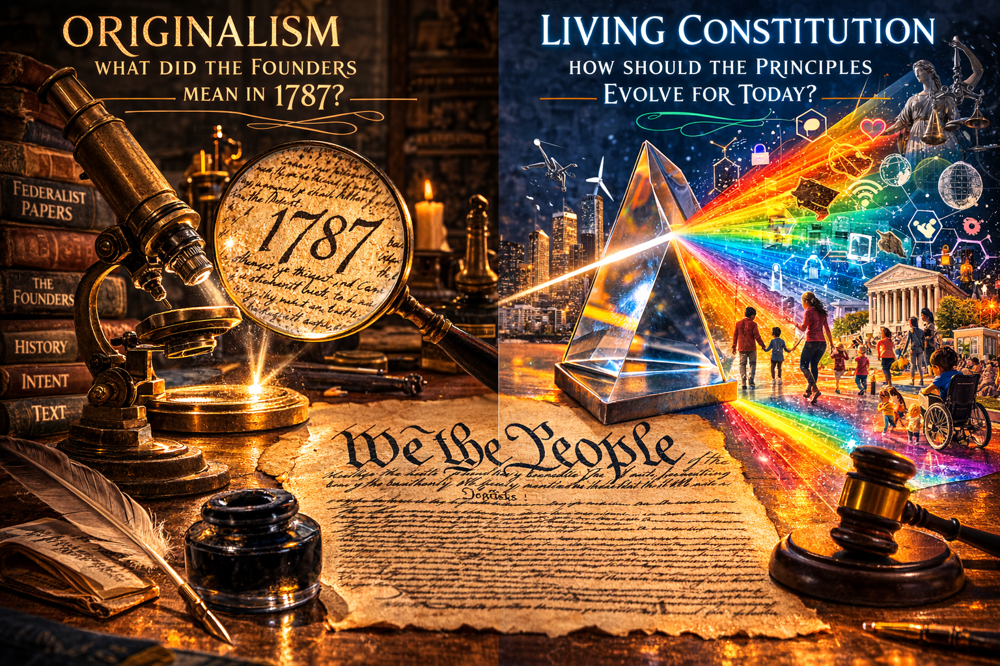
The philosophical debate over constitutional interpretation centers on whether the document is a fixed contract or an evolving framework. Strict adherence to original historical understanding competes with the view that underlying principles must be adapted to prevent the legal system from becoming obsolete.
Originalism (often associated with Textualism) holds that the Constitution should be interpreted based on the original understanding of the text at the time it was adopted. An originalist asks: "What did the public understand 'freedom of speech' to mean in 1791?" or "What did 'equal protection' mean to the ratifiers of the 14th Amendment in 1868?" Proponents of this view, such as the late Justice Antonin Scalia, argue that the Constitution is a contract with a fixed meaning. If the meaning changes over time, then judges are essentially rewriting the contract without the people's consent. They argue that if society wants to change the Supreme Law, they should use the Amendment process (Article V), not rely on unelected judges to update it.
The Living Constitution approach takes a different view. Proponents argue that the Framers wrote the Constitution in broad, flexible language specifically so it could evolve to meet the needs of a changing society. They argue that relying solely on 18th-century understandings would lead to absurd results in a modern world. For example, the Founders could not have conceived of wiretapping, the internet, or modern semi-automatic weaponry. A "living constitutionalist" judge looks at the underlying principles of the text—such as "liberty" or "dignity"—and applies them to modern contexts. This philosophy suggests that the Constitution must grow with the nation, or it will become brittle and break.
Checkpoint
1. What is a key argument made by proponents of the Living Constitution against Originalism?
The Scope of Power: Activism vs. Restraint
The debate over how to read the Constitution often bleeds into a debate over how much power the Court should exert. This is framed as the conflict between Judicial Activism and Judicial Restraint. While these terms are frequently used as political insults in the media, they represent distinct legal philosophies regarding the role of the unelected branch in a democracy.
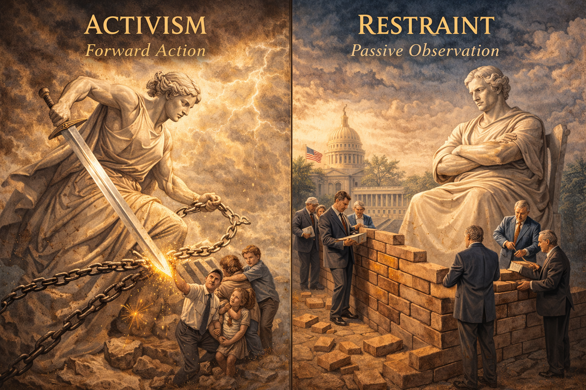
Judicial philosophy dictates the appropriate balance of power between unelected judges and democratic legislatures. A willingness to strike down legislative acts prioritizes minority protections, while deference to lawmakers prioritizes the democratic process, regardless of the policy outcome.
Judicial Activism is the philosophy that the courts should play a bold, active role in policy-making and in correcting injustices that the other branches have failed to address. An activist judge is more willing to strike down laws and overturn precedents to protect minority rights or expand personal liberties. The Warren Court (1953-1969) is the archetype of this philosophy. Under Chief Justice Earl Warren, the Court aggressively expanded civil rights, banning segregation (Brown), requiring attorneys for the poor (Gideon v. Wainwright), and mandating police warnings (Miranda v. Arizona). Activists argue that because the political process often ignores the rights of the powerless (who may not have the money or votes to influence Congress), the courts have a moral and constitutional obligation to intervene.
Judicial Restraint, in contrast, holds that judges should be highly reluctant to overturn the acts of democratically elected legislatures. A judge practicing restraint assumes that laws passed by Congress or state legislatures are constitutional unless they clearly and undeniably violate the text of the Constitution. They believe that policy decisions—such as how to manage healthcare, abortion, or environmental protection—should be left to the elected branches because those branches can be voted out of office. Advocates of restraint argue that when unelected judges strike down laws based on vague interpretations, they are undermining democracy and acting as a "super-legislature."
It is critical to understand that "activism" is not a synonym for "liberal," and "restraint" is not a synonym for "conservative." A conservative court striking down a strict gun control law passed by a city council is exercising activism (overturning the democratic will of that city). A liberal court upholding a strict death penalty law because the Constitution does not explicitly ban it is exercising restraint (deferring to the legislature). The core tension is not about the outcome of the case (who wins), but about the process—should the Court lead the nation toward justice, or should it stand back and let the democratic process work, even if that process produces results the judges personally dislike?
Checkpoint
1. Which action best exemplifies a judge practicing judicial activism?
The Dialogue of Law
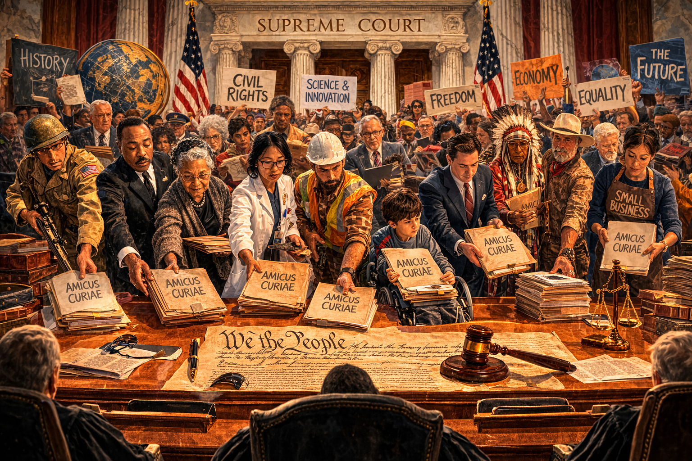
Constitutional law is shaped not in isolation, but through active dialogue with external societal forces. By analyzing extensive written input from experts, interest groups, and government agencies, the judiciary evaluates the real-world, practical consequences of their abstract legal interpretations.
The interaction between these philosophies ensures that constitutional law is never static. It is a dialogue between the past and the present. When the Court hears a case on digital privacy, it is listening to the voices of James Madison (who wrote the Fourth Amendment) and modern tech companies simultaneously.
Furthermore, the Court does not make these decisions in a vacuum. It accepts Amicus Curiae briefs ("friend of the court" briefs) from interest groups, states, and experts. In a major case regarding affirmative action, the Court might receive briefs from the U.S. Military, major corporations, and civil rights groups, all explaining how a ruling would affect the real world. This input helps the justices understand the practical consequences of their abstract legal theories.
Ultimately, the legitimacy of the Court depends on its ability to justify its decisions. Whether a justice uses Originalism or the Living Constitution, they must write a written opinion explaining their logic. This requirement of reason distinguishes the judiciary from the other branches. A President can issue an order because "I decided so." A Congress can pass a law because "we have the votes." A Court, however, must say, "We rule this way because the law requires it," and they must show their work. This intellectual rigor is what allows the Constitution to survive as the unifying force of the nation.
Checkpoint
1. What purpose do Amicus Curiae briefs serve in the judicial process?
Judicial Independence and Institutional Constraints
The legitimacy of the judicial branch rests entirely on the concept of independence. If a judge rules in favor of the government because they fear being fired by the President, or if they rule in favor of a wealthy corporation because they need campaign donations to keep their job, the concept of "justice" becomes a sham. In such a system, the courts would merely be an extension of political power, not a check on it. To prevent this, the Framers of the Constitution built structural protections into Article III to insulate federal judges from the rough-and-tumble world of politics. However, they also feared the tyranny of an unaccountable judiciary—a group of elites who could never be removed. Therefore, while the courts are independent, they are not supreme; they are subject to a complex system of checks and balances designed to keep them within their constitutional bounds.

The legitimacy of a justice system relies on structural independence from political coercion. While insulated from immediate electoral pressures and financial threats, the judiciary remains physically and procedurally tethered to the other branches through a complex web of constitutional checks.
The Shield of Tenure
The primary mechanism for ensuring judicial independence is life tenure. Article III states that federal judges shall hold their offices "during good Behaviour." This means that once a federal judge is appointed and confirmed, they serve for life. They cannot be fired by the President who appointed them, nor can they be removed simply because Congress dislikes their decisions. They serve until they resign, retire, or die. This is a radical departure from the other branches. Presidents must face the voters every four years; members of the House every two years. Judges never face the voters.

Permanent judicial appointments shield legal officers from the threat of political retaliation. This structural insulation empowers the courts to uphold unpopular constitutional rights and make legally correct but politically toxic decisions without fear of losing their livelihoods.
This insulation allows judges to make necessary but unpopular rulings. A perfect example of this dynamic occurred in Texas v. Johnson (1989). In this case, the Supreme Court ruled that burning the American flag was a form of "symbolic speech" protected by the First Amendment. The decision was incredibly unpopular with the American public and politicians of both parties. If the justices had been elected officials worrying about their next campaign, it is almost certain they would have upheld the ban on flag burning to avoid angering voters. But because they possessed life tenure, they were free to uphold the Constitution's protection of free expression, even when it was painful and controversial to do so.
Furthermore, the Constitution prohibits Congress from reducing a judge's salary during their service. This prevents the legislative branch from using the "power of the purse" as a weapon to punish the courts. If Congress could cut the pay of the Supreme Court justices every time the Court struck down a law, the judiciary would quickly become subservient to the legislature. These protections—life tenure and salary security—are designed to create a class of public servants who owe allegiance only to the Constitution and the law, not to a political party, a patron, or a mob.
Checkpoint
1. What constitutional provision serves as the primary shield for judicial independence?
The Political Check of Appointment
While judges are independent once they are seated on the bench, the process of getting them there is deeply political. The power to appoint federal judges is shared between the President and the Senate. The President nominates candidates, usually selecting individuals who share their ideological views. A conservative President will nominate judges who believe in judicial restraint or originalism; a liberal President will nominate judges who believe in a living constitution. This allows a President to leave a legacy that lasts decades beyond their own term.
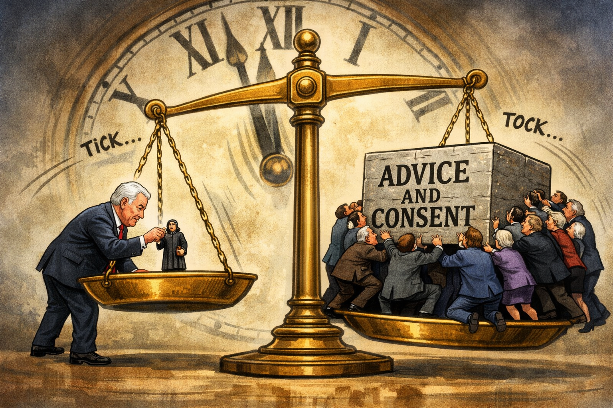
The process of staffing the judiciary serves as a delayed democratic check on an unelected branch. Through the nomination and confirmation powers, victorious political parties gradually infuse long-term ideological shifts into the courts, ensuring the judiciary loosely tracks with generational political trends.
The Senate must provide "Advice and Consent" for these nominations. Historically, this process was often routine, focusing on the nominee's qualifications and character. However, in recent decades, it has become a high-stakes partisan battleground. The rejection of Robert Bork in 1987 marked a turning point. Bork, a conservative scholar nominated by Ronald Reagan, was rejected by the Senate not because he was unqualified, but because Democrats fundamentally disagreed with his judicial philosophy regarding civil rights and privacy. Similarly, in 2016, the Republican-controlled Senate refused to even hold hearings for Merrick Garland, a nominee of President Barack Obama, arguing that the vacancy should be filled by the next President.
These battles highlight how the appointment process serves as a democratic check on the judiciary. By winning elections, political parties earn the right to nominate and confirm judges, thereby indirectly infusing the popular will into the courts. The composition of the Court shifts slowly, but it does shift, reflecting the long-term political trends of the nation.
Checkpoint
1. In what way does the appointment process inject democratic influence into the independent judiciary?
The Ultimate Checks: Impeachment and Enforcement
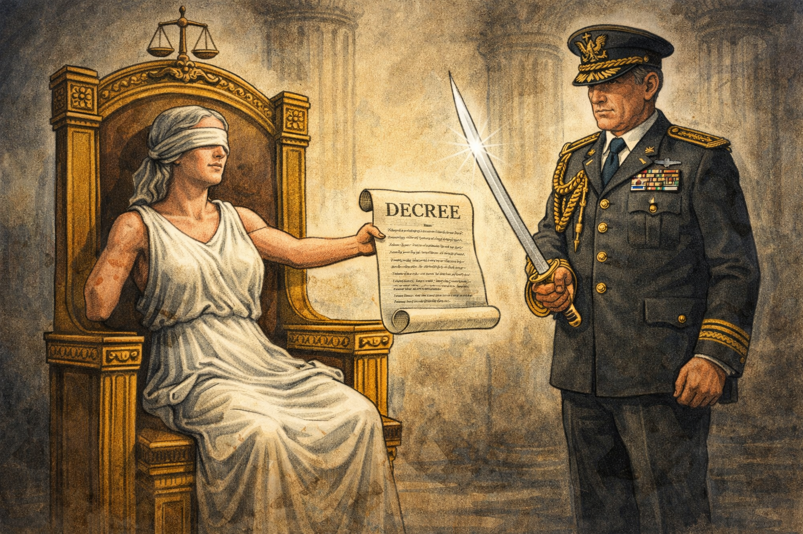
The ultimate limitation of judicial power is its reliance on external enforcement. Without the active cooperation of the executive branch to carry out its rulings, a court's decrees possess no physical authority, highlighting the fragile nature of judicial supremacy.
Despite their life tenure, judges are not kings. The other branches possess significant tools to check the judiciary if it overreaches or engages in misconduct.
Impeachment: Like the President, federal judges can be impeached by the House of Representatives and removed by the Senate for "Treason, Bribery, or other high Crimes and Misdemeanors." While rare, this mechanism ensures that independence does not equal immunity from the law. Throughout history, several federal judges have been removed for corruption or perjury.
Constitutional Amendments: If the Supreme Court interprets the Constitution in a way that the nation finds unacceptable, the people can amend the Constitution to override the Court. For example, in Chisholm v. Georgia (1793), the Court ruled that citizens of one state could sue another state in federal court. This decision caused an uproar among advocates of state sovereignty. In response, Congress and the states rapidly ratified the 11th Amendment, which explicitly blocked such lawsuits, effectively overruling the Supreme Court. Similarly, when the Court struck down the federal income tax in the 1890s, the 16th Amendment was passed to legalize it. This is the ultimate trump card of the democratic process.
The Power of Enforcement: Perhaps the most practical check on the Court is its lack of enforcement power. The Court can issue a ruling, but it relies on the Executive branch to enforce it. In the 1830s, the Supreme Court ruled in Worcester v. Georgia that the state of Georgia could not seize Cherokee lands. President Andrew Jackson, who supported Indian Removal, famously (and perhaps apocryphally) challenged the ruling by saying, "John Marshall has made his decision; now let him enforce it." The executive branch ignored the Court, and the Cherokee were forcibly removed on the Trail of Tears. Conversely, in 1957, when the Governor of Arkansas refused to obey federal court orders to integrate Central High School in Little Rock, President Eisenhower sent the 101st Airborne Division to enforce the Court's will. The Court depends on the respect and cooperation of the other branches. If it acts too radically or without legal basis, it risks being ignored, which would destroy its authority.
Checkpoint
1. What tool does the Constitution provide to address serious legal misconduct by a federal judge?
The Necessity of Friction

Institutional friction between government branches is an intentional design feature meant to prevent centralized tyranny. The structural necessity of compromise and overlapping authority forces the branches to moderate their actions, ensuring no single entity achieves unchecked dominance.
The relationship between the judiciary and the other branches is defined by friction. This is not a flaw in the system; it is a feature. The design of the Constitution ensures that no single branch can dominate the others. The President appoints judges, but the Senate must confirm them. The Court can strike down laws, but Congress can rewrite them or amend the Constitution. The Court can issue rulings, but the Executive must enforce them.
This "strategic logic" forces compromise and moderation. It prevents the judiciary from becoming a "judicial aristocracy" while preventing the political branches from becoming a "legislative tyranny." The survival of this system depends on a shared commitment to the rule of law. When a President obeys a court order they disagree with (as Richard Nixon did when the Court ordered him to turn over the Watergate tapes), they are reinforcing the stability of the republic. The checks and balances ensure that while the Supreme Court is the final arbiter of the Constitution, it is never the only voice in the conversation.
Checkpoint
1. Why is the friction between the judiciary and the political branches considered a feature rather than a flaw?
Conclusion
The Supreme Court acts as the final arbiter of the Constitution not by force, but by judgment. From the strategic brilliance of John Marshall in Marbury v. Madison, the Court carved out the power of judicial review, positioning itself as the guardian of the constitutional text against the temporary passions of legislative majorities. Through the dual court system, the judiciary filters thousands of disputes to ensure that federal law is applied uniformly, whether in a district court in Kansas or the Supreme Court in Washington, D.C.

The judiciary shapes the boundaries of society through judgment and legal reasoning rather than brute force or financial power. By establishing the definitive interpretation of the law, the courts serve as the final stabilizing mechanism within a dynamic and frequently turbulent democratic system.
The debates over judicial philosophy—activism versus restraint, originalism versus the living constitution—are not merely academic exercises. They determine the scope of our rights and the limits of our government. By balancing the stability of stare decisis with the need to correct historical injustices, the Court navigates the changing currents of American society. Yet, this power is not unchecked. The appointment process, the threat of impeachment, and the amendment process ensure that the judiciary remains tethered to the democratic will. As we look toward the interaction of the branches, we see that while Congress makes the law and the President enforces it, it is the Judiciary that defines it. In the next chapter, we will explore how these defined rights apply to the individual through the lens of Civil Liberties.
Checkpoint
1. How does the judiciary primarily exercise its influence within the framework of government?
Chapter Assessment
Section I – Vocabulary
Instructions: Match the correct term from the Word Bank to the definition below.
1. The power of the courts to declare laws or executive actions unconstitutional.
2. A legal brief submitted by a "friend of the court" to influence the justices' decision.
3. The authority of a court to hear a case for the first time and determine the facts.
4. The legal principle of respecting past court decisions; Latin for "to stand by things decided."
5. A formal order from the Supreme Court to a lower court requesting the records of a case for review.
6. The philosophy that judges should use their power to correct social wrongs and advance constitutional rights.
7. The authority of a court to review decisions made by lower courts to check for errors of law.
8. Cases that involve the U.S. Constitution, federal laws, or treaties.
9. A previous court ruling that serves as a guide or rule for future cases.
10. The philosophy that judges should defer to the elected branches of government unless a law is clearly unconstitutional.
Section II – Comprehension
Instructions: Select the best answer for each question based on the chapter text.
1. Which Supreme Court case established the power of judicial review?
2. Which of the following best describes the "Rule of Four"?
3. Federal judges serve for a term of:
4. Most cases heard by the Supreme Court come from:
5. Which court in the federal system uses juries and calls witnesses?
6. If a judge believes that the Constitution should be interpreted based strictly on what the Framers intended in 1787, they are practicing:
7. Which of the following is a check the Legislative Branch has on the Judiciary?
8. Why are federal judges appointed rather than elected?
Section III – Guided Analysis
Section IV – Visual Analysis Concepts
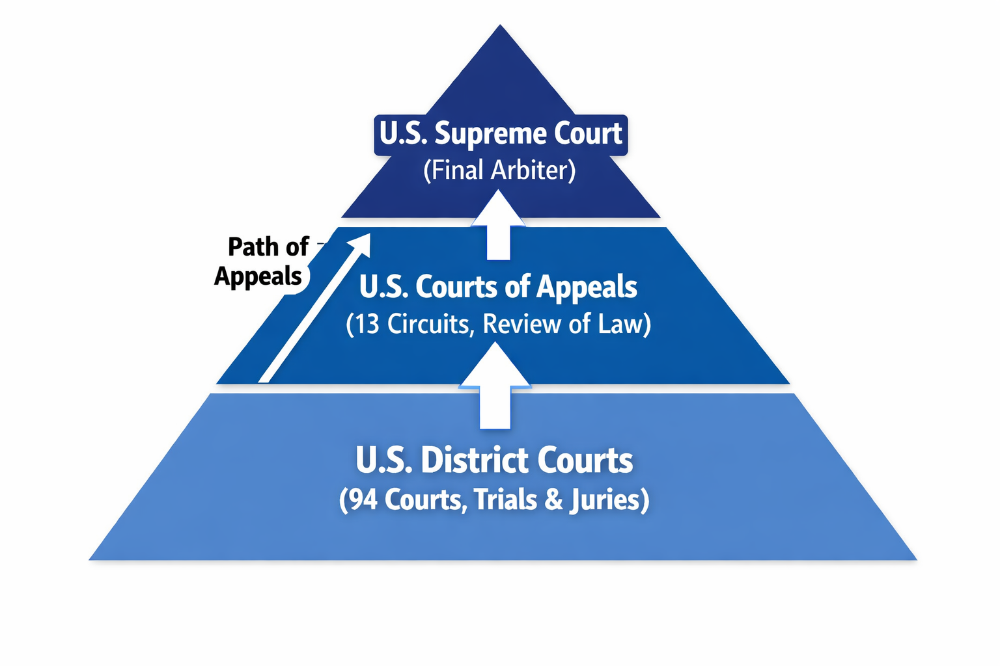
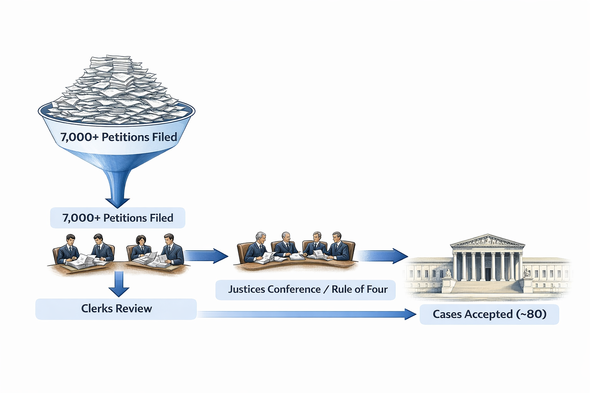
Section V – Primary Source (CER)
"The judiciary, on the contrary, has no influence over either the sword or the purse; no direction either of the strength or of the wealth of the society; and can take no active resolution whatever. It may truly be said to have neither FORCE nor WILL, but merely judgment; and must ultimately depend upon the aid of the executive arm even for the efficacy of its judgments." - Excerpt from Federalist No. 78 by Alexander Hamilton (1788)